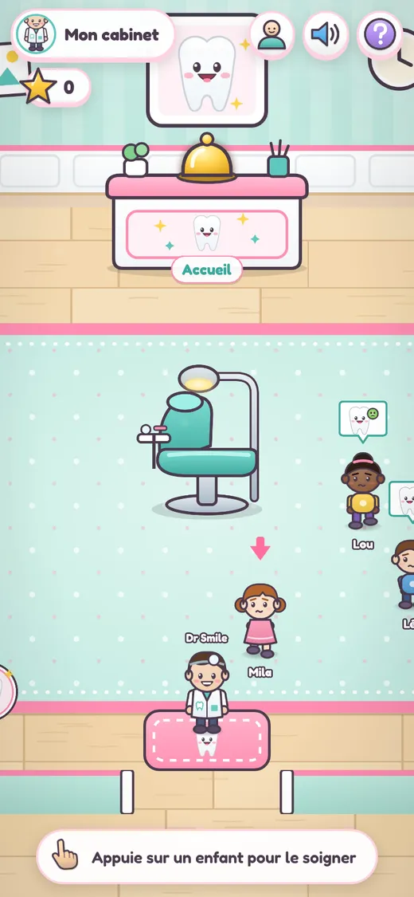
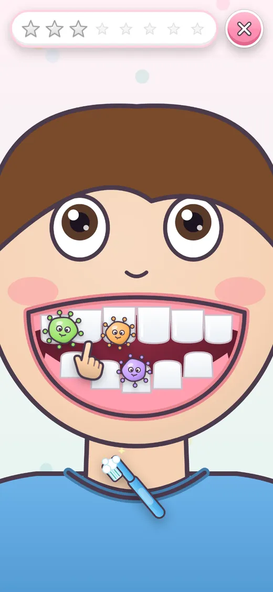
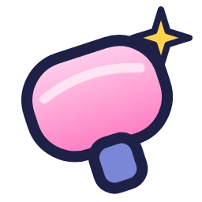

6–7 ansFrançaisSans lecture
Dr Smile
Brosse les dents et rends tout le monde heureux !
Un cabinet de dentiste tout doux pour un enfant qui apprend à lire. On touche un enfant, on zoome sur sa bouche et on frotte les petites bêtes avec la brosse. Puis il repart avec un grand sourire et on sonne pour le suivant.

Gros plan à frotter Un toucher = une action Flèche-guide Récompenses sans texte